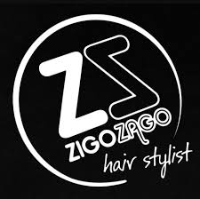
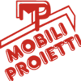
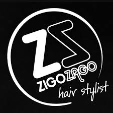
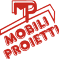

Alessandro Barresi
Alessandro Barresi, classe 2014, si prepara a vivere la sua prima gara ufficiale a settembre. Nonostante la giovane età, dimostra già una grande determinazione e la voglia di confrontarsi con piloti più esperti. Ogni allenamento è un passo avanti, ogni giro in pista un’occasione per crescere. Alessandro affronta questa nuova avventura con entusiasmo, coraggio e una passione che promette grandi emozioni.

Angelo Scarano
Angelo Scarano, classe 2010, ha fatto il suo debutto nella Promorace Cup a giugno 2025 lasciando subito il segno: conquista la pole position e si piazza al secondo posto, dimostrando un talento naturale che brilla fin dai primi giri. La sua determinazione e la voglia di emergere lo spingono oltre ogni limite, regalando emozioni intense in pista. E questo è solo l'inizio: Angelo è pronto a spingere sempre più forte, a crescere e a sorprendere, portando con sé la freschezza e la gioia di un ragazzo solare che non perde mai il sorriso, dentro e fuori dal paddock.

Domenico Toscano
Domenico Toscano, classe 2010, ha iniziato a correre nel 2021 e già nel 2023 ha conquistato il Campionato Prime Pieghe. Nel 2024 si è classificato terzo nel Campionato Nazionale MotoASI. Nel 2025 è un volto fisso sul podio della Promorace, dimostrando grande costanza e talento, classificandosi secondo con il campionato ancora aperto. Con la sua mentalità competitiva e il suo carattere solare, Domenico è diventato un vero punto di riferimento in pista e il ragazzo più adorato nei paddock.

Margherita Giannotti
Margherita Giannotti, classe 1995, è la dimostrazione che la passione può nascere all’improvviso e a qualsiasi età. Sale per la prima volta in moto nel 2022, quasi per gioco, e inizia a correre ufficialmente solo un anno dopo. Conquista grandi risultati: nel 2024 è Campionessa Nazionale MotoASI e Vice Campionessa della Promorace Cup. Con coraggio ha affrontato anche una wild card nel CIV Femminile a Magione e ha preso parte all’Europeo 12 Pollici.Per Margherita correre è iniziato quasi come un gioco, ma si è trasformato in una passione molto forte che coltiva ogni giorno, affrontando ogni sfida sempre con il sorriso e tanta determinazione.

Nicholas Bedoya
Nicholas Bedoya, classe 2009, ha iniziato a gareggiare nel 2024 e ha subito lasciato il segno, conquistando 3 podi nelle sue primissime competizioni. Nel 2025 affronta con coraggio e determinazione il suo primo Campionato GP7, misurandosi con avversari esperti e altamente competitivi. Ogni gara è una sfida, ogni curva una prova di maturità: Nicholas cresce gara dopo gara, spinto da una passione autentica e da una voglia instancabile di migliorare.

Rocco Misiti
Rocco Misiti, classe 2009, al suo primo anno di gare ha conquistato un totale di 3 podi: 2 nella Promorace Cup e 1 nel Trofeo dei Campioni di Civitavecchia. Nel 2025, ogni sua gara è uno spettacolo da vedere: nelle prime tappe della Promorace Cup ha spesso lottato tra le prime posizioni, regalando duelli emozionanti e sorpassi decisi. Con la sua grinta, affronta ogni sfida a testa bassa, senza mai perdere il sorriso, e continua a martellare i suoi tempi con una determinazione contagiosa e un cuore gigante.
 


